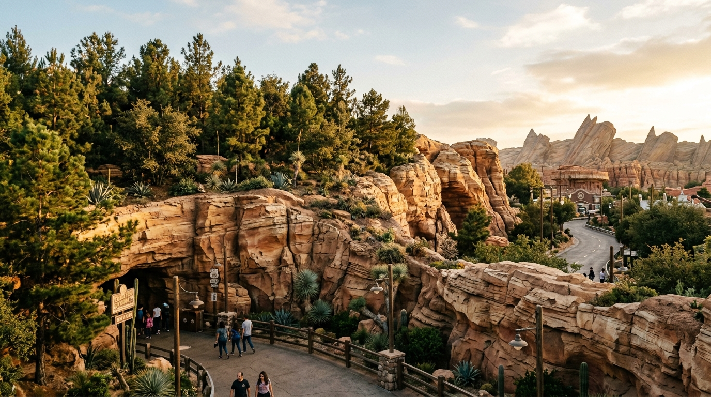
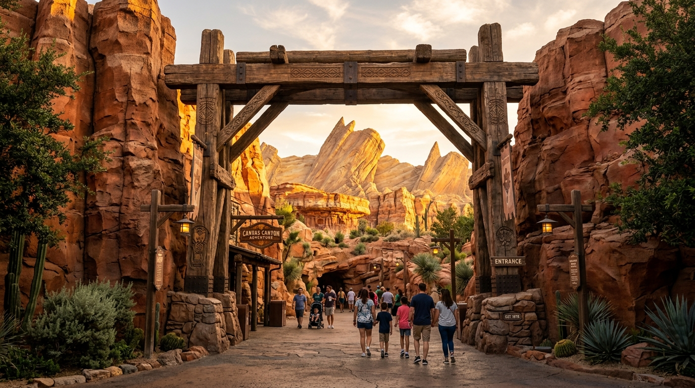

¡Bienvenida Alessia! Aprende inglés arquitectónico de forma suave, visual y entretenida. Sin reglas gramaticales pesadas: observa las 3 fotos reales de Disney, asocia las palabras en el juego interactivo y completa tus frases con los desplegables.
La montaña icónica al final de la calle
Significado: De escala gigante e imponente.
Significado: Roca clara y dorada por el sol del desierto.
Significado: Atrae de forma natural la mirada y los pasos.
Emoción: Sentir gran admiración y sorpresa ante la inmensa montaña.

El terraplén de roca y pinos que aísla
Significado: Muro de tierra y roca alrededor del parque.
Significado: Paredes de roca artística hechas a mano.
Significado: Bloquea carreteras, autos y ruidos exteriores.
Emoción: Sentirse en calma, protegido del ruido y estrés exterior.

El arco rústico de madera que te transporta
Significado: Vigas de madera rústica curtidas por el clima.
Significado: Entrada arquitectónica que enmarca la vista.
Significado: El espacio se ensancha de repente con asombro.
Emoción: Deseo emocionante de cruzar y descubrir lo que hay al otro lado.
¿Cómo jugar? Mira las 12 fichas en la bandeja (arquitectura + emoción). Haz clic en el botón de la foto a la que pertenece (1. Butte, 2. Berm o 3. Portal). Si quieres corregir una palabra, haz clic sobre ella para devolverla a la bandeja.
Mira cada foto y completa las frases con las palabras arquitectónicas y la emoción que siente el visitante.
¡Felicidades por completar los ejercicios, Alessia! Ahora solo tienes que leer estas 3 frases completas en voz alta. Haz una pausa tranquila entre cada punto. Habla despacio y con orgullo.
"At the end of the road, you see Willys Butte. It is monumental and sun-bleached. Guests feel awe as it draws them forward! Around the park, we build a sculpted rock berm. It hides the ugly highway outside, so guests feel peaceful and safe. Guests walk through a rustic weathered timber arch. Suddenly, the canyon opens up dramatically, and they feel curious to explore!"
"Al final del camino, ves Willys Butte. Es monumental y soleado. ¡Los visitantes sienten asombro mientras los atrae hacia adelante! Alrededor del parque, construimos un terraplén de roca esculpida. Oculta la fea autopista para que los visitantes se sientan en paz y protegidos. Los visitantes cruzan un arco rústico de madera envejecida. De repente, ¡el cañón se abre dramáticamente y se sienten curiosos por explorar!"